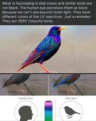

0



There's a glass roof — but no rear-view window. Instead the Polestar 4 replaces the rear-view mirror with a live feed from a wide-angle camera. Its high-resolution display (1480 x 320 pixels) promises "a panoramic view of the outside," according to Polestar's web site, showing more of what's behind you. "Visibility in the dark and in rainy conditions is also vastly improved."
Besides the camera feed (and side mirrors), the Polestar 4 offers four short-range cameras (for 360-degree views), and even short-range ultrasonics, the Wall Street Journal points out. (Car rear-view windows are usually five feet off the ground, "making a typical traffic cone invisible from closer than about 35 feet." ) And this new design also improves "aero efficiency," reducing drag and shearing turbulence, "critical, since the Polestar 4 is all-electric, and aero drag is the mortal enemy of range."
[A]s a practical matter, the Polestar 4's innovation only acknowledges what drivers already know. In many modern cars, the rearview mirror is all but useless, anyway. In a typical full-size SUV, the glass in the rear hatch is about 10 feet away from the rearview mirror, with two sets of headrests in between... Having spent a few days in what Polestar calls an "SUV coupe" I am here to report that drivers won't miss the mirror. For one thing, the display is shaped like a conventional mirror, imbuing it with the comfort of the familiar. The imagery is convincingly mirror-like — reversed — with eye-like focal length, decent resolution and lowlight sensitivity, making it easy to trust when judging distances, with the help of graphical overlays and warning tones. It also has excellent auto-dimming algorithms....
The Polestar 4 is called that because it is the fourth model from the Swedish-Chinese premium/luxury collab, born out of Volvo Cars' performance subbrand. Describing it as an "SUV coupe" almost feels like a translation error. The design eschews signaling traditional utility in favor of a jocund modernism — call it orbital chic.... As for missing the rear window, my advice is, don't look back.
"In sports cars, rearview mirrors have been essentially decorative for some time," the article points out. (The 1974 Lamborghini Countach LP400 originally envisioned "a rear-facing periscope fitted in a dorsal channel in the roof.")
"The era's contempt for rearview mirrors was captured in a scene from The Gumball Rally (1976) when Raul Julia's character snaps the mirror off his Ferrari Daytona and throws it away. 'The first rule of Italian driving,' he says. 'What's behind me is not important.'"
There's 11 exterior cameras, plus 12 ultrasonic sensors and a mid-range radar to watch for threats
and "intervene if necessary". One feature even reads speed limit signs and shows the posted limit on the driver's display. ("If the car exceeds the limit, the driver will hear a warning sound.") Even the windshield has built-in camera sensors to provide automatically "adaptive" headlights that switch from high beam to low beam when they identify approaching vehicles or the taillights of cars ahead.
"A total of seven airbags are deployed in the event of a collision."
Thanks to Slashdot reader fjo3 for sharing the article.
Read more of this story at Slashdot.
Microsoft released the "Windows Subsystem for Linux" in 2016, adding an optional Linux environment into every operating system since Windows 10. But now an open source developer has brought Linux to Windows 95, Windows 98, and Windows Me, reports the blog It's FOSS, "with Linux kernel 6.19 running alongside the Windows 9x kernel, letting both operate on the same machine at the same time."
A virtual device driver handles initialization, loads the kernel off disk and manages the event loop for page faults and syscalls. Since Win9x lacks the right interrupt table support for the standard Linux syscall interrupt, WSL9x reroutes those calls through the fault handler instead. Rounding it all out is wsl.com, a small 16-bit DOS program that pipes the terminal output from Linux back to whatever MS-DOS prompt window you ran it from.
The end result is that WSL9x requires no hardware virtualization, and can run on hardware as old as the i486, the article points out. On Mastodon the developer says they "really got this one in right under the wire, before they start removing 486 support from Linux."
The source code for WSL9x is released under the GPL-3 license, and was "proudly written without AI."
Read more of this story at Slashdot.
"Old code like amateur radio and NFC have long been a burden to core networking developers," reads the pull request.
And so Thursday Linus Torvald merged the pull request "to rid the Linux kernel of the old Integrated Services Digital Network (ISDN) subsystem," reports Phoronix, "and various other old network drivers largely for PCMCIA era network adapters."
This was the code suggested for removal given the recent influx of AI/LLM-generated bug reports against this dated code that likely has no active upstream users remaining... [W]ith the large language models and increased code fuzzing finding potential issues with these drivers for obsolete hardware, it's easier to just get rid of these drivers if no one is actively using the hardware from decades ago...
This merge lightens the kernel by 138,161 lines of code with ISDN gone and numerous old network adapters and also getting rid of legacy ATM device drivers as well as the amateur ham radio support. The main networking drivers removed affect the 3com 3c509 / 3c515 / 3c574 / 3c589, AMD Lance, AMD NMCLAN, SMSC SMC9194 / SMC91C92, Fujitsu FMVJ18X, and 8390 AX88190 / Ultra / WD80X3.
Linux 7.1 also has removed the long-obsolete bus mouse support as well as beginning to phase out Intel 486 CPU support and removing support for Russia's Baikal CPUs.
Read more of this story at Slashdot.
It's the U.S. government's main link to the AI industry, reports The Washington Post, working to assess national security risks of new models like Anthropic's "Mythos".
To run it they'd hired Collin Burns, who'd worked at OpenAI and then Anthropic. But Burns started work Monday at the Center for AI Standards and Innovation — and then "was pushed out Thursday by the White House, according to the people, who spoke on the condition of anonymity to describe private conversations."
Officials were concerned about Burns having worked at the AI company, which has fought bitterly with the Trump administration in recent months, according to one of the people and another person. That person said some senior figures at the White House had not been briefed on Burns's selection in advance... The new pick was Chris Fall, a scientist with a long career spanning the federal government and academia. Burns had been asked to resign that afternoon, according to one of the people familiar with the situation...
Dean Ball, a former Trump administration AI adviser, said on social media that Burns had given up valuable Anthropic stock and moved across the country to take the government position, and had been "rewarded by his country with a punch in the face." "Obviously what happened is Burns was bumped because of his association with Anthropic," Ball wrote. "A dumb but predictable own goal."
Read more of this story at Slashdot.
After Australia banned social media for users younger than 16, teenagers "immediately worked to circumvent the restrictions," reports Fortune:
14-year-old in New South Wales, told
The Washington Post in December 2025, just
before the implementation of the ban, she planned to use her mother's
face ID to log in to Snapchat
and .
In a Reddit thread on ways to bypass the ban, one user suggested
using a printed mesh face mask from Temu to outsmart apps'
facial recognition tools. Others still have tried VPNs that obscure
their locations.
A new report
suggests these efforts are working. In a survey of 1,050 Australians ages 12 to 15 conducted last month, the
UK-based suicide prevention organization the Molly Rose Foundation
found more than 60% of teens who had social media accounts before the
ban still had access to at least one of those platforms. Social media
sites including TikTok, YouTube, and Instagram, have retained more than half of their users under 16.
About two-thirds of young users say these platforms have taken "no
action" to remove or reactive accounts that existed before the
restrictions.
The survey comes at the heels of the Australian internet regulator
calling
for an investigation into the five largest social media platforms
over potential breaches of the ban.
The article points out that "Greece, France, Indonesia, Austria, Spain, and the UK have or are considering similar action, and eight U.S. states are weighing legislation that would put guardrails or ban social media use for minors.
Read more of this story at Slashdot.
The Free Software Foundation's Licensing and Compliance Manager published a blog post this week to explicitly state that"Responsible AI" Licenses (RAIL) are nonfree and unethical. The licenses restrict AI and ML software "from being used in a specific list of harmful applications," according to the license's web site, "e.g. in surveillance and crime prediction." (The license's steering committee is volunteers from multiple academic institutions.)
But even though Responsible AI licenses are marketed as addressing ethical challenges, the FSF argues "they do not require anything that is really necessary for users to control their computing done with machine learning, including: complete training inputs, training configuration settings, trained model, or — last, but not least — the source code of software used for training, testing, and running tools based on machine learning."
Thus, RAILed machine learning can be, and most probably will be, unethical. Use restrictions do not prevent these licenses from being used to exercise power over users...
RAIL contribute to unethical marketing of machine learning, again under the disguise of morally-loaded restrictions they purport to enforce. If we want software to help decrease social injustice, we should oppose licenses that restrict how software can be used. We should focus on effective ways of addressing injustices: government and community support for freedom-respecting tools and services; releasing programs under strong copyleft licenses; and entrusting copyrights to organizations that have the resources to enforce copyleft.
Software freedom must be defended, not denied. More specifically, the more free software is out there, the more likely people will collaborate on tools and services that do not pose moral dangers and help solve existing ones. Free software also makes it more likely that users have real choices when looking for freedom-respecting ethical programs and tools based on machine learning. Denying people the freedom to a particular program, as RAIL or similar licenses would have it, prevents them from using such program for the common good.
Read more of this story at Slashdot.
Intel's stock price soared 24% Friday. It's the stock's largest single-day spike since since October 1987, reports CNBC, "as investors cheered signs of renewed growth due to mounting artificial intelligence demand."
The stock closed at $82.57 and is now up 124% this year after jumping 84% in 2025. Friday's rally topped a 23% gain for the stock on Sept. 18, when Nvidia agreed to invest $5 billion in the company... "INTC's new CEO fixed the balance sheet, and is executing on a strategy that appears to have put INTC back on the competitive track," analysts at Evercore ISI wrote in a report after earnings, upgrading the shares to the equivalent of a buy rating.
First-quarter revenue topped estimates and rose 7.2% to $13.58 billion from $12.67 billion a year earlier. In five of the prior seven quarters, the company posted year-over-year declines in revenue...
The rally on Wall Street marks a stark turnaround for the U.S. chipmaker, which lost 60% of its value in 2024, leading to the ouster of Pat Gelsinger as CEO in December of that year... Intel's data center business is driving much of the current growth. Revenue jumped 22% from a year earlier to $5.1 billion, as AI fuels renewed demand for central processing units. Analysts at Citi upgraded the stock to a buy from a neutral rating, anticipating an uplift in CPU sales for all suppliers over the next few years.
Besides Tesla, Intel's CEO said Thursday that "multiple customers" are "actively evaluating the technology" their new 14A chip technology, according to CNBC, and that 14A development is happening faster than its 18A technology.
The sudden spike in Intel's stock price makes the stock chart look almost like a straigbht line up. Last August it was selling for less than $20 a share — so it's quadrupled in value less that nine months.
Read more of this story at Slashdot.
Physicists have proposed a new kind of atomic clock based on a revived superradiant laser concept that could produce an extraordinarily stable signal with a linewidth around 100 microhertz, potentially the narrowest ever for an optical laser. "The implications of this result could stretch well beyond timekeeping," reports Phys.org. "A laser immune to environmental frequency shifts would be a powerful tool in optical interferometry -- using interference patterns in light to make ultra-precise measurements." From the report: In a conventional laser, a mirrored cavity bounces light back and forth between atoms, building up a bright, coherent beam. A superradiant laser works differently: rather than relying on the cavity to maintain coherence, the atoms themselves act as single coordinated emitters, collectively synchronizing their light emission. Following early theoretical ideas emerged in the 1990s, the concept didn't gain concrete traction until 2008, when researchers at the University of Colorado proposed that superradiant lasers could serve as a new kind of atomic clock.
Atomic clocks work by using laser light to probe a very precise transition in an atom, causing electrons to transition between energy levels at an extraordinarily stable frequency. Because a superradiant laser stores its coherence in the atoms rather than the cavity, its output frequency is far less vulnerable to environmental disturbances like vibrations or temperature fluctuations. Yet although this concept was first demonstrated experimentally in 2012 in a pulsed regime, the influence of heating has so far held superradiant lasers back from their full potential. To keep the laser running continuously as an atomic clock requires, atoms must be constantly replenished with energy. Doing this atom-by-atom delivers random kicks that heat the atomic sample and disrupt the lasing process, confining it to brief pulses rather than a steady beam.
In their study, Reilly's team considered whether a modification to earlier theoretical concepts could make a continuous laser suitable for an atomic clock. In almost all previous studies, atoms were treated as simple two-level systems: an electron sitting in a ground state, occasionally jumping up to an excited state and back again. The team proposed that the heating problem could be solved by adding one extra ground state to the picture. In a two-level system, if both the pumping (re-energizing) and decay processes happen collectively through the cavity, the mathematics constrains the system in a way that prevents stable, continuous lasing. But with three levels available, pumping and decay can operate on entirely separate transitions, breaking that constraint and allowing the collective approach to work. The findings have been published in the journal Physical Review Letters.
Read more of this story at Slashdot.
An anonymous reader quotes a report from NPR: The Food and Drug Administration approved the first gene therapy to restore hearing for people who were born deaf. The decision, while only immediately affecting people born with a very rare form of genetic deafness, is being hailed as a milestone in the quest to treat hearing loss. "It's the first time in history there's a new drug for hearing loss," says Zheng-Yi Chen, an associate scientist at Mass Eye and Ear in Boston who was not involved in the development of the therapy approved by the FDA Thursday. But his research team reported very promising results with a similar approach Wednesday. "I think it's an historical event, a landmark, a great development for the whole field," he says of the approval. [...] The FDA's decision was based on the results from the treatment of 20 patients born with a defective version of a gene known as OTOF, which is necessary to transmit sound from the ears to the brain.
Doctors infused billions of adeno-associated viruses into the patients' ears by making a small incision behind the ear to open a small hole in the skull. The viruses carried a healthy version of the OTOF gene that had been split in half to fit inside the virus. The gene provides instructions to make the otoferlin protein, which is necessary for hair cells in the inner ear to transmit sound to the brain. Most of the patients began to hear for the first time within weeks, with the quality of their hearing improving over the following months, according to [Regeneron Pharmaceuticals, which developed the gene therapy and plans to offer it for free in the U.S. It should be available within weeks.]. The amount of hearing patients gained varied, but 80% achieved at least some significant hearing restoration and 42% ended up with normal hearing, which included the ability to hear whispers, Regeneron says. The hearing ability has lasted at least two years so far.
The treatment can only help patients with the very rare form of deafness that Smith was born with, which only affects about 50 children each year in the U.S. But similar gene therapies are showing promise for other forms of genetic deafness. And researchers hope someday gene therapy may help with common types of hearing loss, like from aging and loud noise.
Read more of this story at Slashdot.
Maine Gov. Janet Mills vetoed a bill that would have imposed the nation's first statewide moratorium on new data centers, saying she supported the idea in principle but would not block a major redevelopment project tied to jobs and local investment. Instead, she said she will create a council to study data centers' effects while also signing a separate measure to deny them certain state tax incentives. Politico reports: "After prior redevelopment efforts failed, the Town of Jay worked for two years on a $550 million data center redevelopment project to finally bring jobs and investment back to the mill site," Mills wrote, adding that she would issue an executive order establishing a council to examine the impact of data centers in Maine.
The legislation would have made Maine the first state to block the construction of new data centers, as both political parties grapple with how voters view them ahead of the midterm elections. In a statement accompanying the letter, the governor said she had signed a separate bill that would prohibit data center projects from receiving Maine's business development tax incentive programs
Read more of this story at Slashdot.
BMW's latest concept car moves the color-changing tech it debuted back at CES 2022 closer to reality by embedding an E Ink panel directly into the hood. The Verge reports: BMW's previous concepts wrapped the entire vehicle in a patchwork of E Ink panels that were all custom-sized and shaped to match its contours. It was an approach that wasn't practical for mass production, and one that wasn't very durable. The new BMW iX3 Flow Edition is potentially the most exciting of all of BMW's concepts as it embeds the E Ink Prism technology directly into the structure of the vehicle's hood panel, instead of just slapping it on top. The new approach has "undergone BMW's stringent quality testing" so that it meets the "requirements of automotive engineering and everyday use," according to a release from E Ink.
The BMW iX3 Flow Edition's color-changing capabilities are limited to its hood with eight different animations (which appear restricted to a grayscale palette) that can be changed by the driver at the push of a button. It's not exactly the color-changing car that BMW has been teasing for years and you still can't buy one, but by focusing on making this technology more practical and functional these vehicles are one step closer to moving past the concept phase.
Read more of this story at Slashdot.
A report says Samsung's mobile division could post its first-ever annual loss in 2026, as rising memory costs, tougher competition, and pressure across products like foldables and smartwatches weigh on the business. SammyGuru reports: Samsung boss TM Roh reportedly told company leaders that the mobile (MX) business could lose money this year. That warning has clearly rattled management. The MX unit has long been a key pillar for Samsung. That's why the idea of it slipping into the red is a serious concern for the company's overall performance.
If this prediction holds, it would mark the first time the MX business reports a yearly loss since its inception. That's a sharp turn from its track record so far. It also raises bigger questions about future growth, rising competition, and how Samsung plans to steady the ship in its mobile division.
And it's not like the challenges are easing up. Samsung's foldable market share in the US, where it currently enjoys a dominant position, doesn't look as solid as before, and Apple could shake things up if it enters the segment. On top of that, market reports suggest Samsung's overall smartwatch share could dip in 2026. The Galaxy S26 series seems to be selling well for now, but whether that's enough to move the needle is still up in the air.
Read more of this story at Slashdot.
Google plans to invest up to $40 billion more in Anthropic, starting with $10 billion now and another $30 billion tied to performance milestones. CNBC reports: Anthropic said the agreement expands on a longstanding partnership between the two companies. Earlier this month, Anthropic secured 5 gigawatts worth of computing capacity as part of an announcement with Google and Broadcom that will start to come online next year. Anthropic could decide to add additional gigawatts of compute in the future.
[...] The relationship between the two companies (Google and Anthropic) dates back to 2023, when Google invested $300 million in the AI lab for a stake of about 10%. Months later, Google poured in another $2 billion. Ahead of Friday's announcement, Google's investment in Anthropic exceeded $3 billion, and it reportedly owned a 14% stake in the company. Now, the leading tech companies are investing tens of billions of dollars in the frontier AI labs -- OpenAI and Anthropic -- in funding rounds that far exceed any prior investments in startups. Much of that investment will return in the form of revenue.
Read more of this story at Slashdot.
Longtime Slashdot reader Himmy32 writes: Socket Security published an article on the compromise of the Bitwarden CLI client, which was pushed from Bitwarden's client repository. This breach was the next in a chain of supply-chain attacks that have affected Checkmarx KICS and Aqua Security's Trivy scanners.
The breach was quickly detected and reported by JFrog on the GitHub repository; JFrog also provided a technical write-up. The Bitwarden team has released statements on a blog post indicating that the compromise did not affect vault or customer data. Only 334 downloads of the affected CLI client were downloaded before removal and remediation.
Read more of this story at Slashdot.
Colorado's "age-attestation" bill left the House committee with new exemptions for open-source operating systems, applications, code repositories, and containerized software distribution, reports the blog Linuxiac:
[The bill] focuses on operating system providers and application stores. Its main requirement is that these providers supply an age-related signal via an interface, so applications can determine whether a user is a minor... System76 founder Carl Richell shared on Fosstodon that the updated bill now includes "a strong exemption for open source distros and apps" and has passed in the House committee. He also quoted the key part, which says Article 30 does not apply to an operating system provider or developer that distributes software under license terms that let recipients copy, redistribute, and modify the software without restrictions from the provider or developer... This wording covers Linux distributions and many open-source applications without linking the exemption to any specific project, company, or ecosystem.
The amendment also excludes applications from free, public code repositories from being considered covered applications. It also excludes code repository providers and containerized software distribution from being defined as covered application stores. This is meant to prevent platforms like GitHub, GitLab, Docker, or Podman-based distributions from being treated like commercial app stores under the bill.
"There are more steps but we're on our way to protecting the open source community," Richell posted on Fosstodon, "at least in Colorado."
Read more of this story at Slashdot.
Jamie Tarabay / Bloomberg : A profile of Strider, an intelligence firm that leverages agentic AI and public records to help the US Air Force, NATO, and others identify foreign state actors — Trump's economic crackdown on China's US interests is creating opportunities for a Utah-based intelligence firm
Wall Street Journal : Trump hosted a gala luncheon for leading $TRUMP holders, where he spoke about his pro-crypto policies, but avoided the memecoin's declining value — The president's address touched on everything from the war in Iran to his policies supporting the crypto industry
Samantha Kelly / Bloomberg : A look at Tin Can's $100 retro-style, Wi-Fi-enabled landline phone, and how some schools are seeding the device to students in an attempt to curb smartphone use — The Tin Can has gone viral over the past year, mostly through word of mouth. Now schools want to get even more of them in students' homes.
Theo Baker / The Atlantic : A look at “Stanford inside Stanford”, where VCs pursue 18- and 19-year-old students, offering mentorship and funding in a bid to convert promise into profit — Silicon Valley venture capitalists are wining and dining 18-year-olds. — When i was a freshman at Stanford University …
Russell Contreras / Axios : How the Vatican is moving faster than most legacy institutions to shape AI rules and guardrails, with an AI framework, banning use of AI to write homilies, more — The Vatican is racing to build digital defenses for the artificial intelligence era — and quietly positioning itself as a global referee of what's real.
Bloomberg : Analysis: Taiwan's stock market value has surpassed the UK's at ~$4.3T, with South Korea close behind, driven by massive gains in TSMC, Samsung, and SK Hynix — The artificial intelligence boom has triggered a seismic reshuffling of global equity markets, with Taiwan and South Korea muscling past European nations one by one.
Lorenzo Franceschi-Bicchierai / TechCrunch : Citizen Lab details two spying campaigns that abuse weaknesses in the SS7 and Diameter protocols across 2G, 3G, 4G, and 5G networks to track people's locations — Security researchers have uncovered two separate spying campaigns that are abusing well-known weaknesses in the global telecoms infrastructure to track people's locations.
Ashley Capoot / CNBC : An overview of Elon Musk's $134B lawsuit against Sam Altman, scheduled to begin on Monday, accusing Altman of reneging on a vow to keep OpenAI nonprofit — A yearslong legal brawl between Elon Musk, the world's richest man, and OpenAI CEO Sam Altman heads to court in Northern California …
Ian King / Bloomberg : Intel's upbeat outlook suggests CEO Lip-Bu Tan is making progress on a turnaround, having strengthened the company's balance sheet and now improving operations — Intel's Strong AI-Fueled Forecast Tops Estimates — Intel Corp. shares hit a record high after the chipmaker delivered …
Ben Schoon / 9to5Google : Report: Samsung co-CEO TM Roh told company leaders that the mobile division MX could report its first ever annual loss this year, amid RAM and storage shortages — As AI continues to eat up the market's RAM output, smartphones are in crisis as costs continue to skyrocket.
Bloomberg : The value of US government's stake in Intel has increased fourfold to ~$36B, since an August 2025 announcement that the US will buy a stake worth $8.9B — The value of the US government stake in Intel Corp. has increased fourfold to hit a value of about $36 billion after the chipmaker's financial outlook showed a resurgence in sales.
Bloomberg : A $16B financing for a giant Oracle data center in Michigan has closed, with BofA selling $14B in bonds; Oracle plans to use the campus to power apps for OpenAI — A $16 billion financing for a giant Oracle Corp. data center in Michigan has wrapped after months of stop-and-start negotiations with investors.
Connie Loizos / TechCrunch : LinkedIn profile review shows Thinking Machines Lab has been hiring more researchers from Meta than from any other employer; TML's headcount now stands at ~140 — Weiyao Wang spent eight years at Meta — his first job out of college — helping build multimodal perception systems and contributing …
PYMNTS.com : Adyen plans to acquire Talon.One, a platform for loyalty and incentives that serves more than 300 global merchants, for €750M, expected to close in H2 2026 — Adyen plans to acquire Talon.One, a platform for loyalty and incentives that serves more than 300 global merchants …
Anthropic : Anthropic details Project Deal, a marketplace experiment where Claude models bought, sold, and negotiated personal belongings on behalf of Anthropic employees — At Anthropic, we're interested in how AI models could begin to affect commercial exchange. (You might recall Project Vend …